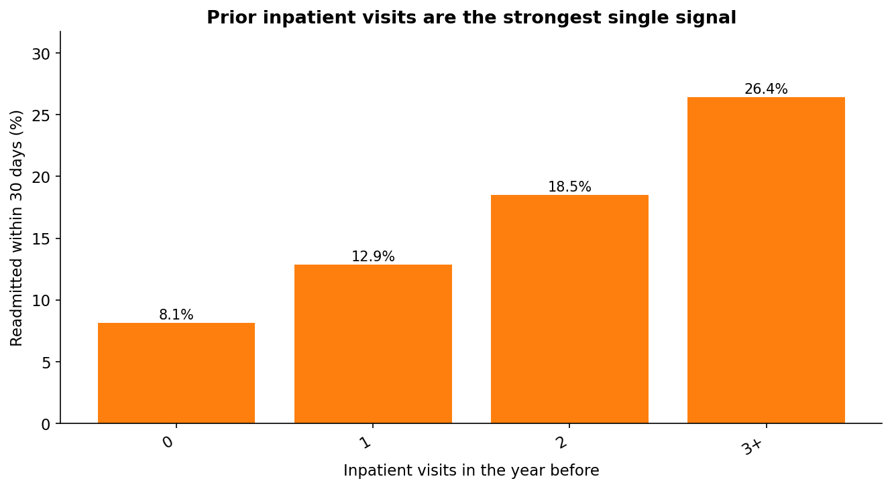
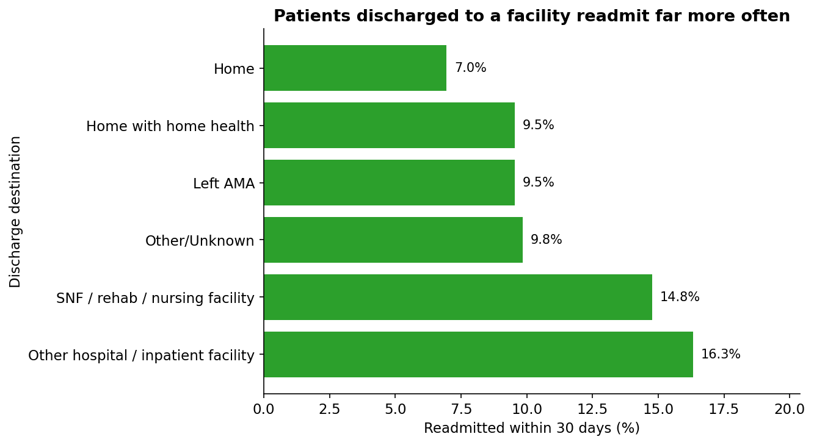
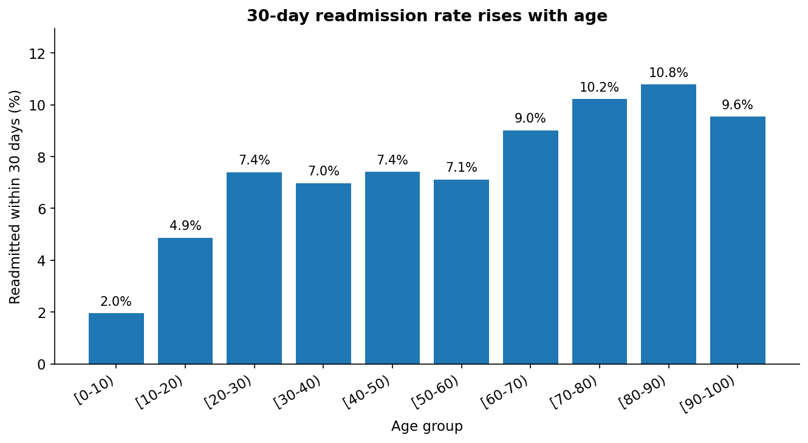
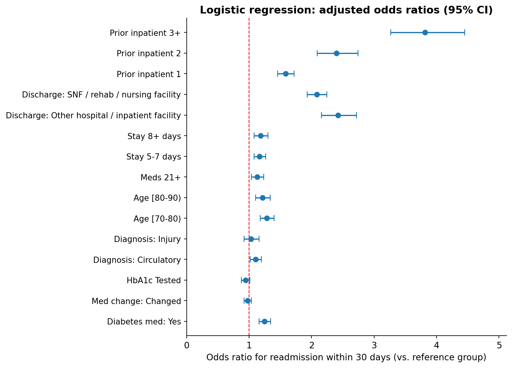

69,985
Patients in analysis cohort
8.98%
Readmitted within 30 days
6,284
30-day readmissions
$95,516,800
Illustrative cost of those readmissions*
High-risk patient profiles
Segments to act on first. Rates are associations in this dataset, not predictions for an individual patient.
| Profile | Patients | Rate | Suggested action |
|---|---|---|---|
| 3+ prior inpatient visits, discharged to SNF / rehab | 166 | 31.33% | Daily check-in with the receiving facility for the first week |
| 3+ prior inpatient visits (any discharge) | 896 | 26.45% | Same-week follow-up call and post-discharge review — first priority |
| 3+ prior inpatient visits, discharged home | 511 | 23.29% | Home-health visit within 48 hours; confirm medication list |
| 2 prior inpatient visits | 1,501 | 18.52% | Follow-up call within one week of discharge |
| Stay of 8+ days | 9,768 | 11.79% | Medication review before discharge; confirm follow-up appointment |
| Age 80–90, emergency admission | 6,224* | 10.91% | Discharge planning with family / caregiver involved |
* Age 80–90 emergency-admission count is the 80–90 group overall in the source table; the rate shown is for emergency admissions within that group.
Prior inpatient visits drive readmission

Patients with 3+ inpatient visits in the previous year were readmitted at 26.45%, vs 8.13% with none. Adjusted odds ratio 3.82 (95% CI 3.27–4.45).
Readmission by discharge destination

Readmission by age group

Adjusted odds ratios (logistic regression)

All factors in one model, so each odds ratio is adjusted for the others. The model explains only a small share of readmission risk (McFadden pseudo-R² = 0.035): clinical severity, social factors, and post-discharge care are not in this dataset.
Rate by prior inpatient visits
| Segment | Patients | Readmitted | Rate |
|---|---|---|---|
| 0 | 61,790 | 5,022 | 8.13% |
| 1 | 5,798 | 747 | 12.88% |
| 2 | 1,501 | 278 | 18.52% |
| 3+ | 896 | 237 | 26.45% |
Rate by discharge destination
| Segment | Patients | Readmitted | Rate |
|---|---|---|---|
| Other hospital / inpatient facility | 2,463 | 402 | 16.32% |
| SNF / rehab / nursing facility | 11,070 | 1,635 | 14.77% |
| Other/Unknown | 3,359 | 331 | 9.85% |
| Home with home health | 8,364 | 798 | 9.54% |
| Left AMA | 409 | 39 | 9.54% |
| Home | 44,320 | 3,079 | 6.95% |
Rate by age group
| Segment | Patients | Readmitted | Rate |
|---|---|---|---|
| [0-10) | 153 | 3 | 1.96% |
| [10-20) | 534 | 26 | 4.87% |
| [20-30) | 1,121 | 83 | 7.40% |
| [30-40) | 2,692 | 188 | 6.98% |
| [40-50) | 6,828 | 506 | 7.41% |
| [50-60) | 12,351 | 880 | 7.12% |
| [60-70) | 15,688 | 1,415 | 9.02% |
| [70-80) | 17,748 | 1,816 | 10.23% |
| [80-90) | 11,110 | 1,199 | 10.79% |
| [90-100) | 1,760 | 168 | 9.55% |
Rate by primary diagnosis
| Segment | Patients | Readmitted | Rate |
|---|---|---|---|
| Injury | 4,694 | 507 | 10.80% |
| Circulatory | 21,388 | 2,070 | 9.68% |
| Diabetes | 5,761 | 525 | 9.11% |
| Neoplasms | 2,538 | 230 | 9.06% |
| Genitourinary | 3,441 | 309 | 8.98% |
| Other | 12,110 | 1,087 | 8.98% |
| Musculoskeletal | 4,064 | 341 | 8.39% |
| Digestive | 6,488 | 520 | 8.01% |
| Respiratory | 9,491 | 693 | 7.30% |